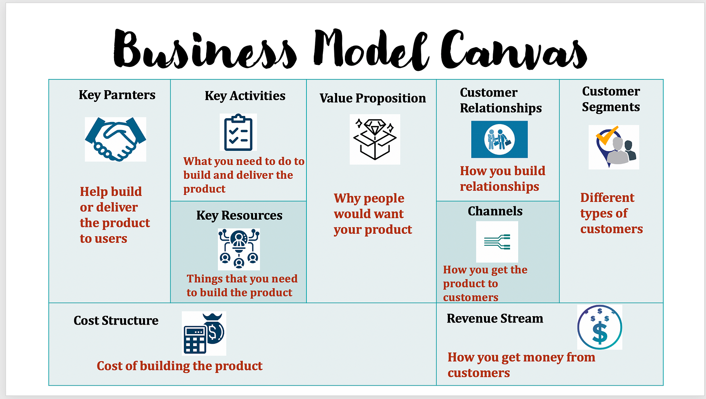

What is an Unfair Advantage? A real unfair advantage is something that cannot be easily copied or bought by your competitors.
Chapter 1 Evan Spiegel’s success story: Right time, right place and right idea. The book is all about working smarter. How to work system in your favor?
Hard work and sacrifice are important factors. But these are not the only factors. For sure working hard is important. You don’t want to develop a product by working hard which no one wants.
Life is unfair and you have to use it for your advantage.
Chapter 2 - our entrepreneurial journeys
The author explains how he tried launching e-commerce for selling shoes online in 1998. The author launched then a startup (2007). The other author explains how he did not become a Dr but became an entrepreneur.
The author realized his unfair advantage once when a girl was begging. Simple things matter which can be your unfair advantages e.g. family, friends, education, emotional intelligence, (let it be) small money that allows you take a class.
Chapter 3 - Success if both hard work and luck
Work like hell, luck enters in everyone’s life.
Hard work is important but also luck matters (both authors claim to be coming from financially good background and loving families and claim that it was important for their success). Oprah – African girl – had lots of disadvantages e.g. she was sexually molested at age of 9, was asked to sleep in porch as she was not fair, she gave birth to premature baby who died in 2 months - but she still turned out to be successful. Oprah was born with skills.
She was genius in language and reading.
Those were her talents. It started with hard work & practice, but also with her capabilities she was born with. The influence of her grandmother, grandfather and her father was important. So her unfair advantages were here relatives and her abilities. Every person has certain talents – exploring is the key to make it unfair advantage. Hard work beats talent when talent doesn’t work hard but combining the two that’s when you get rocket fuel.
We all are not fortunate to do things which we like. We have to ensure that we are compassionate though life is not fair with us all the time. You need to look after your physical and mental health. How many people you know who have worked hard but still have financial worries? You can do things to improve your luck and there is nothing wrong in getting lucky. Work from now on from point of your strength.
Chapter 4 - Introducing unfair advantage
Two persons (girls) apply for same job. One person applied online, second was referred personally. Person with reference got a job – this person had unfair advantage. World works like that (unfortunately). Unfair advantage = circumstance which keeps you in favorable (business) position. We all have unfair advantages. Your unfair advantages cannot be easily copied. Startup has unfair advantage = sum of individual unfair advantages of co-founders. Your unfair advantage is your leverage. When you leverage your unfair advantage then you are working smart. We all have 24 hrs only, we have to decide how to spend them. Using unfair advantage to be successful keeps on adding further success (same as that of compound effect). Success = cumulative advantage. Unfair advantages = speed and short cut to success. Unfair advantages = privileges.
Chapter 5 - introducing miles framework
Take into consideration your circumstances.
5 categories
M – Money (capital you have)
I – Intelligence and insight (emotional intelligence, creativity)
L location and luck (being in right place at right time)
E – Education and expertise (formal scooling and your self learning)
S – Status (your personal brand, confidence and self-esteem)
You don’t need all of above. You have to team up with those who have complementary unfair advantages to that of you.
One common considered unfair advantage is money but that is not true. For startup you need all unfair advantages mentioned in MILES via employees. Always ask “why” you are doing something when it starts. 5 important personality traits which are important – openness (how open you are to new things), Consciousness (organized, self-disciplined and goal oriented you are), extroversion (do you like spending time with others), agreeableness (how friendly, compassionate and cooperative you are), neurotism (how prone are you to worries). Studies show there is no one personality type which is important for entrepreneurship. It is important to find where you stand and act accordingly. You need healthy level of emotional stability. You need to partner with someone how has other personality trait than you to build synergies. Consult with your friends or family to find which type you are.
Chapter 6 - Mindset
You can change your mindset by looking at the circumstances of your life with different lens (its not difficult author claims).
Growth mindset vs fixed mindset: fixed mindset = black and white thinking about what you can do or cannot do. Growth mindset = yet, e.g. I cant write a business a plan, “yet” opens up possibilities. You need element of realism in your thinking (set realistic dreams?). Authors offer 3rd type of mindset = reality growth mindset. It is ability to accept the hard facts. There are limitations and deploy right actions. Universe gives you something beyond which you did not imagine. Remember – majority of the things in life are for free. Self-awareness = e.g. I wont win a noble prize or become a president, self-belief = I am going to succeed in my own way.
It is all about setting achievable goals!
You must accept it that you are born in circumstances (of advantages or unfair advantages) which you cannot control. But at the same time you must know that you are the master of your future. Realistic mind set = fertile soil where your unfair advantage starts to spring! Without right mindset you cant go far.
4 characteristics of reality growth mindset: 1. vision – without vision you lose a lot of things in personal or professional life (it is about target setting), vision shows you future which you want to achieve 2. Resourcefulness – solve the problems quickly, ability to come up with solutions to problems 3. Lifelong learning – it is needed in current times strongly than older times, 4. Grit and perseverance - you need thick skin, you must be capable of taking criticism, take responsibility for your failures, you should be able to bounce although you failed.
Chapter 7 - money
It takes money to make money. We are talking about wealth here. Wealth is more than money only. Money is not the only type of capital we have. We also have economic capital i.e. money, social network of allies and friends as capital and cultural capital. Cutting costs is important if you are losing money and you have to increase savings. Having lot of money can be unfair advantage but its not the only factor. Many startups have failed despite of having money. Mark Zuckeberg invested only 85000 dollors for Facebook. You need 6-18 monthy of runway time (expenses covered) if you want to quit working and start a startup. Variation of instabilities affect us during the time. If you have dependants on you e.g. children or you are poor, you cannot start a startup. Necessity is mother of invention.
Chapter 8 -Intelligence and insights
Intelligence is difficult to define. It has different aspects. Does IQ matter – yes it matters but there is no general agreement on intelligence matters. IQ doesn’t predict how better you will do in life. IQ rating is affected by motivation. Higher IQ is unfair advantage. But business isn't exam – its process. So IQ number cannot define your success. Smart kids at school don’t necessarily have to do better in life. Don’t let your exam grades predetermine your success in life.
Street smarts – things you learn at school. They can be developed via experience. It requires social and emotional intelligence. Emotional intelligence is very important in business, and it is key. Creative intelligence is another unfair advantage. We all can develop creativity. You have to increase your knowledge for it. Creativity is gaining more and more importance as A.I. is gaining edge. A.I. cannot copy (yet) creativity. Having insight = finding a need on the market. It means find a problem which needs a solution. You can get best insights by talking to your customers (partners). You have to find pain point fo your customers, use those insights and develop a solution.
Find out how well are you with people, can you work in team, can you connect with people. If you lack such things, you need partner who can fulfil this gap. Some skills you can develop: cultivate curiosity, ask (right) questions, experiment, find how others are feeling, find out pain points, be aware of your moods.
Chapter 9 You will see different business opportunities near important companies e.g. near a tech giant a university maybe built-up or startups are close to education centers for big companies. Silicon Valley taken as example by the author. For startups its important to be close to where talent and funding is necessary. Hence location matters. Being located at such places can be unfair advantage. Having master minds around you is very important. Pickup a location with reputation. Timing is very important and correlate its important towards luck. You should not be too early as you have to educate your users. Being too late means you have tough competition. That’s why it matters to be at right time. Right place and right time are important but additionally you need right mindset. Have a mindset of gratitude and look at things which you have. We don’t have control over luck, but we can develop a right mindset. Be like a rolling dice (flexible and persistent) – at some point you will hit the number 6 – there you will get lucky. Getting too early lucky isnt good – it doesn’t allow you to develop thick skin.
One addition by Raman: By smart choice of location, you also get access to talent (another unfair advantage to make you lucky).
Chapter 10 - Education and expertise
There is no wealth like knowledge. Life is continuous learning and doesn’t stop after school/university. Most of the business built-up in world are by university graduates. Having good education is big unfair advantage. Knowledge, network and signaling are the advantages coming from education. Technical unfair advantage – this comes only with education. For certain businesses you need technical knowledge. Expertise: you learn by doing. Applying theory and practicing it leads to expertise. Expertise means being good at some specific topic/field/thing. We can't change what we received as education as child, but if you see a need, you can still educate yourself at any age.
Chapter 11 - Status
Your status is your personal brand – its how people see you. Status in adulthood = which kind of job you do, your education, etc. Higher status = power to influence others. You have to improve your network to improve your status. You need to find mentorship – someone who is 2-5 years ahead of you. If you have higher status – finding co-founders get easy and also you improve your unfair advantage. Network = mutual benefits, otherwise network don’t work. Inner status is your self-esteem and it is important for improving your outer status. Love yourself and accept yourself. Start from there and improve further. Self-doubt is normal and majority of people have it. No one knows what is right in particular decision. You need to have faith in your abilities.
Chapter 12 -The why
You need to find out why you are doing a specific thing (e.g. starting a startup). You have to correctly figure out your motivation. What is that you want to achieve e.g. improving society, or luxury, or saving environment etc. You need to define success for yourself, else someone else (social media) will define it for you. One must carefully evaluate own strengths and weaknesses.
Chapter 13 -the type of startups
Every small new business can be considered as startup. Different types of startups are discussed in this chapter – too difficult to summarize. There are two types of startups. Lifestyle startups are designed to sustain a certain lifestyle (i.e. income, work schedule) E.g. dental clinics, restaurants, bakeries, accounting firm,etc. Investors aren’t usually interested in lifestyle startups. Hyper-growth startups are attractive for investors. Hyper-growth startups usually focus on technology E.g. WhatsApp, Uber, AirBnB, etc. Hyper-growth startups are better if you have very strong unfair advantages otherwise you may want to go with lifestyle startup idea.
Chapter 14 -The idea
Facebook is a good example of startup having strong unfair advantages. Mark Zuckerberg had several unfair advantages – connection to universities, users, etc. Same is amazon – it was not the first one to start e-commerce. Your idea don’t have to be really new or groundbreaking, but it must be a good idea at right time & right place. Location and luck (timing) are more important than ideas. Find out which problem you are going to solve by your idea. Start with “who”. It takes lots of creative intelligence to find out unmet needs of people. Find out what annoys others – this might be a problem that needs to be solved (if it is universal problem) then solution to it can be a great idea. Biggest mistake is to have an idea or solution but then searching a suitable problem for it. You may work in specific industry to find out unmet needs in that industry – your insights become your unfair advantage. The idea alone shall not be good, it shall be good for you.
Chapter 15 - the people
Its difficult to succeed as solo founder, you need a (strong) team. For lifestyle startup its okay if you form a startup alone. You can pull more unfair advantages when you team up and have co-founders. You need creator who has vision, technical person, one Commerical person and someone to communicate/sell your products. You can find these people via your network (meetings, conferences, seminars, etc). Do due diligence of people and be careful with who you want to start with. Find out what are your weaknesses an accordingly find your co-founders who can add to your weaknesses as their strength/unfair advantage.
Find a mentor – 1) someone who is few years ahead of you is enough. 2) Talk to them, 3) also add to their value by supporting them 4) act normal with mentors. 5) apply what mentor taught you.
Chapter 16 the business
For any type of startup, start with something small. Test first if people like it.
Once you have idea you need to validate it. You need to find customer feedback. You need them to love it (and not only like it). First build your product and test it – this is what you shall be doing in the first phase. Build a minimum viable product. Minimum means simplified product. Just focus on core value proposition. Later on you can add more services to your product. Don’t take too long to develop your product. It doesn’t have to be perfect.
Growth scrapping – you have to reach to your customers with messages e.g. via emails or social media. Develop product further based on customer feedbacks. Mindset is important in this phase. You may face rejections.
Chapter 17 -fund raising
You are not forming a company to raise money, you are forming it to serve the customers/market. Fund raising is complex task. Types of funds – e.g. Hypergrowth startups start with own funds often, bootstrapping (using your revenue/sales), Fundraising from family, friends and fools, government agencies, rich private persons, venture capitals, private equity and IPOs. You have to find out which funding source is suitable for you. Then you have to create a pitch of your idea. Pitch needs to be specific. It shall include - What is your startup, what problem you will solve, how big is the market and is it accessible, what is your traction, go to market strategy, how will you make money, who is the team, who are your competitors, what is your unfair advantage, how much money you need to raise, how will you spend that money. Learn to tell storytelling. Pitch is all about it. Find investors who really believe in your idea. Some tips for good pitch: have a mvp ready – its more impactful, don’t say you have no competitors, don’t make pitch complex, don’t say we only need money to start.
2015 to 2017 I have worked in new market development team. My task was to find out new business models and try to think of ideas like startups. That we used to fill following sort of business model canvas. I learned that time the key message - "understand your customers and pain points" spend more than 90% of time understanding a problem. Finding a solution is just short step. For the same we needed often a minimum viable product. That was a good learning time. We used to pitch different ideas in front of the team that time.

If you have time, you can listen to this master piece here :--